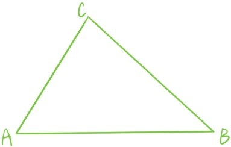
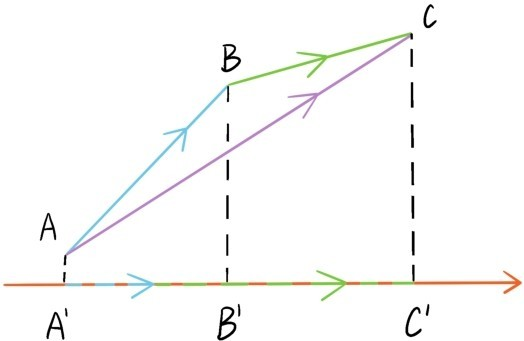
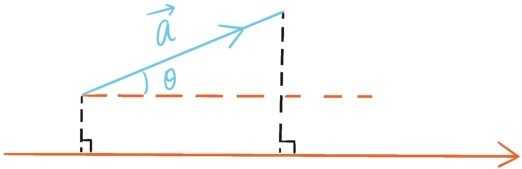

接下来，为了将余弦定理表述为向量加法乘法运算的完全平方差公式，引入向量的内积运算。向量 与向量 的内积是定义为两个向量的模与向量夹角余弦的乘积
请注意，两个向量的内积是定义为一个数而不是向量。记，则。若两个非零向量的方向垂直则称它们是垂直的。我们还约定零向量 与任何向量垂直。根据向量内积的定义，当且仅当两个向量内积为0时，它们垂直。
内积运算与数乘运算满足
根据内积运算的定义，这个等式当λ≥0时是很明显成立的，当λ<0时，只需注意到与 ， 与的夹角都是π-θ，且cos(π-θ)=-cosθ。
很明显，内积运算是满足交换律的，。如果内积运算也满足分配律
这时余弦定理就可以直接推导得出

注意，整个推导过程仅仅利用向量运算定律，没有直接涉及任何几何内容，只要点B，点C与点A不重合，这个证明就成立，无需再分成多种情况分类证明。这才是余弦定理最本质的证明，说明余弦定理本质上就是向量代数运算定律。
最后还剩下一个任务没有完成，就是证明内积运算的分配律
只需证明的情形。根据运算规律，将等式两边同时乘以后，可以归结为证明的情形。令，可以把直线OP当作数轴，使得点O，P分别和0，1这两个数对应。我们也可以考虑数轴OP上的向量。如果让这种向量的起点与数轴原点重合，那么向量的终点就会对应于数轴上的一个点。和平面向量的情况一样，数轴OP上的一维向量，和数轴OP上的点，和实数，就建立起了一一对应的关系，向量的加法也对应着实数的加法。

注意平面上的任何向量都可以投影到数轴OP上，成为数轴OP上的向量。具体的操作是分别过点A和点B作OP的垂线，垂足分别为A'和B'，我们称向量是向量在数轴OP上的投影向量。投影操作保持向量加法，若向量的投影向量是，则向量的投影向量是，投影之下变成。

在这个背景下，正是 的投影向量所对应的实数，所以根据投影操作保持向量加法，以及数轴OP上的向量加法也对应着实数加法这两个事实，。
接下来，利用内积运算的分配律，给出向量内积运算的坐标表示。先考虑x轴和y轴上互相垂直的单位向量 =(1,0)和 =(0,1)，很明显
且
根据内积运算分配律，两个向量和的内积
当时，这就是向量模长公式
利用这两个公式，我们还可以给出 和 的夹角θ的余弦公式
提问时间
7.4.1 证明：向量 与向量垂直。
7.4.2 已知向量 与向量 的夹角是，且，求。
7.4.3 在坐标平面上给定3个点A(-2,3)，B(2,2)与C(3,1)，求∠ABC的余弦值。
7.4.4 证明：与一个固定向量 垂直的所有向量构成一个线性空间。